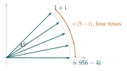

If \(z = x + \mathrm{i}y\), with \(x, y\) real, show that \[|x|\cos\alpha + |y|\sin\alpha \leq |z| \leq |x| + |y|\] for all real \(\alpha\).
By considering \((5 - \mathrm{i})^4(1 + \mathrm{i})\), show that \[\frac\pi4 = 4\tan^{-1}\left(\frac15\right) - \tan^{-1}\left(\frac{1}{239}\right).\] Prove similarly that \[\frac\pi4 = 3\tan^{-1}\left(\frac14\right) + \tan^{-1}\left(\frac{1}{20}\right) + \tan^{-1}\left(\frac{1}{1985}\right).\]
The hook
In 1706 the London mathematician John Machin computed \(\pi\) to \(100\) decimal places, by hand. Nobody had come close before. His secret was the formula in part (ii), which expresses \(\frac\pi4\) in terms of angles whose tangents are tiny fractions. Tiny fractions make the series \(\tan^{-1}x = x - \frac{x^3}{3} + \frac{x^5}{5} - \cdots\) converge very fast, and Machin’s formula, or variants of it, remained the standard way to compute \(\pi\) for two and a half centuries, until computers and the methods of Section 2.6 took over.
The formula looks like a miracle of trigonometric identities. The question shows it is really a fact about multiplying complex numbers: when you multiply complex numbers, their arguments add. One multiplication of whole-number complex numbers proves the whole thing.
Before you start
What is the argument of \(5 - \mathrm{i}\)? Of \(1 + \mathrm{i}\)? What happens to arguments when complex numbers are multiplied?
\(\arg(5 - \mathrm{i}) = -\tan^{-1}\frac15\), a small negative angle, and \(\arg(1 + \mathrm{i}) = \frac\pi4\). When you multiply complex numbers, the moduli multiply and the arguments add (up to multiples of \(2\pi\)). So \[\arg\bigl((5 - \mathrm{i})^4(1 + \mathrm{i})\bigr) = \frac\pi4 - 4\tan^{-1}\frac15 \quad\text{(possibly plus a multiple of } 2\pi\text{)}.\] If we can compute the product and find its argument another way, we get an identity.
Working it through
Stage 1 Bounds on the modulus
For the upper bound, square both sides. For the lower bound, think of \(|x|\cos\alpha + |y|\sin\alpha\) as a dot product of two vectors.
Upper bound: \((|x| + |y|)^2 = x^2 + y^2 + 2|x||y| \geq x^2 + y^2 = |z|^2\), and both sides are non-negative, so \(|z| \leq |x| + |y|\).
Lower bound: \(|x|\cos\alpha + |y|\sin\alpha\) is the dot product of the vector \((|x|, |y|)\), of length \(|z|\), with the unit vector \((\cos\alpha, \sin\alpha)\). A dot product is at most the product of the lengths, so it is at most \(|z|\). (Algebraically: \(|z|^2 - (|x|\cos\alpha + |y|\sin\alpha)^2 = (|x|\sin\alpha - |y|\cos\alpha)^2 \geq 0\).)■
Stage 2 The key multiplication
Compute \((5 - \mathrm{i})^2\), then square it, then multiply by \(1 + \mathrm{i}\).
\((5 - \mathrm{i})^2 = 25 - 10\mathrm{i} - 1 = 24 - 10\mathrm{i}\). Then \((24 - 10\mathrm{i})^2 = 576 - 480\mathrm{i} - 100 = 476 - 480\mathrm{i}\). Finally \[(476 - 480\mathrm{i})(1 + \mathrm{i}) = 476 + 476\mathrm{i} - 480\mathrm{i} + 480 = 956 - 4\mathrm{i}.\]
Now compare arguments. What is the argument of \(956 - 4\mathrm{i}\)? Why are you sure there is no extra multiple of \(2\pi\)?
\(956 - 4\mathrm{i} = 4(239 - \mathrm{i})\), which has argument \(-\tan^{-1}\frac{1}{239}\). So \[\frac\pi4 - 4\tan^{-1}\frac15 = -\tan^{-1}\frac{1}{239} + 2k\pi\] for some integer \(k\). But \(0 < \tan^{-1}\frac15 < \frac15\), so the left-hand side lies between \(\frac\pi4 - \frac45\) and \(\frac\pi4\), that is, between about \(-0.02\) and \(0.79\); and the right-hand side without the \(2k\pi\) lies between \(-0.005\) and \(0\). Since \(2\pi\) is much bigger than the gap, \(k = 0\). Rearranging, \[\frac\pi4 = 4\tan^{-1}\frac15 - \tan^{-1}\frac{1}{239}. \qed\] Figure 5.1.1 shows what happened: starting at \(45^\circ\), each multiplication by \(5 - \mathrm{i}\) rotates clockwise by about \(11.3^\circ\), and after four of them we have overshot the real axis by just \(0.24^\circ\).

Stage 3 The second formula
By analogy, which product should you compute this time?
Consider \((4 + \mathrm{i})^3(20 + \mathrm{i})(1985 + \mathrm{i})\), whose argument is \(3\tan^{-1}\frac14 + \tan^{-1}\frac{1}{20} + \tan^{-1}\frac{1}{1985}\). Now \((4 + \mathrm{i})^2 = 15 + 8\mathrm{i}\), so \((4 + \mathrm{i})^3 = (15 + 8\mathrm{i})(4 + \mathrm{i}) = 52 + 47\mathrm{i}\). Then \((52 + 47\mathrm{i})(20 + \mathrm{i}) = 1040 + 52\mathrm{i} + 940\mathrm{i} - 47 = 993 + 992\mathrm{i}\), and \[(993 + 992\mathrm{i})(1985 + \mathrm{i}) = (1971105 - 992) + (993 + 1969120)\mathrm{i} = 1970113 + 1970113\mathrm{i}.\] Real part equals imaginary part, so the argument is \(\frac\pi4\). All three angles are small and positive (their sum is less than \(3 \cdot \frac14 + \frac1{20} + \frac{1}{1985} < 1 < 2\pi\)), so there is no multiple of \(2\pi\) to worry about, and the formula follows.■
Looking back
Arguments add under multiplication. That single fact turned a product of Gaussian integers into an identity between angles.
Mind the multiples of \(2\pi\). Arguments are only defined up to \(2\pi\), so each identity needed a size estimate to pin down the multiple.
Whole numbers do the work. All the arithmetic was with integers; the identity for \(\pi\) came out exactly, with no approximation.
What’s really going on
Why is Machin’s formula so good for computation? The series \(\tan^{-1}x = x - \frac{x^3}{3} + \frac{x^5}{5} - \cdots\) converges for \(|x| \leq 1\), but painfully slowly at \(x = 1\): you need about a thousand terms of \(1 - \frac13 + \frac15 - \cdots\) for three decimal places of \(\frac\pi4\). With \(x = \frac15\), each term is about \(25\) times smaller than the last, giving roughly \(1.4\) decimal digits per term; with \(x = \frac{1}{239}\), about \(4.8\) digits per term. Machin’s \(100\) digits needed only about \(70\) terms of the first series and \(20\) of the second. In 1873 William Shanks used a Machin formula to compute \(707\) digits, spending years on the arithmetic; in 1944 it was discovered that he had made an error at the \(528\)th place, and everything after it was wrong.
Gaussian integers again
The numbers \(a + b\mathrm{i}\) with \(a\), \(b\) whole numbers are the Gaussian integers of Section 1.6. The reason \(5 - \mathrm{i}\) works so well is a factorisation: \(239^2 + 1 = 57122 = 2 \times 13^4\), which in the Gaussian integers reads \((239 + \mathrm{i})(239 - \mathrm{i}) = (1 + \mathrm{i})(1 - \mathrm{i})\,(3 + 2\mathrm{i})^4(3 - 2\mathrm{i})^4\), and \(5 - \mathrm{i} = (1 - \mathrm{i})(3 + 2\mathrm{i})\) is built from the same Gaussian primes. Finding Machin-type formulas is really a problem about factorising numbers of the form \(n^2 + 1\). In 1899 Carl Størmer used exactly this idea to prove that there are only four formulas of the form \(\frac\pi4 = a\tan^{-1}\frac1m + b\tan^{-1}\frac1n\) with whole numbers \(a\), \(b\), \(m\), \(n\): Machin’s, and three found by Euler, Hermann and Hutton.
Rotations
Multiplying by a complex number of modulus \(1\) is a rotation of the plane. That is why complex numbers are the natural language for anything involving rotation and angles, from the geometry later in this chapter to alternating currents in electrical engineering and the wave functions of quantum mechanics. In Section 4.2 the addition formula for \(\tan^{-1}\) came from a clever substitution; here it comes from the multiplication of complex numbers, and the two are the same fact seen from different sides.
The thinking skill
An identity between sums of angles is an identity between arguments of a product. Compute the product exactly and read off its argument.
Arithmetic with complex numbers is mechanical and exact, while manipulating inverse trigonometric functions is error-prone. Translating from one to the other is often the quickest route to a proof.
Try this next
A cousin. (From STEP II, 2000.) By considering \((5 - \mathrm{i})^2(1 + \mathrm{i})\), prove that \(\tan^{-1}\frac{7}{17} + 2\tan^{-1}\frac15 = \frac\pi4\).
Euler’s formula. Show that \(\tan^{-1}\frac12 + \tan^{-1}\frac13 = \frac\pi4\) by considering \((2 + \mathrm{i})(3 + \mathrm{i})\).
Hutton’s formula. Show that \(\frac\pi4 = 2\tan^{-1}\frac13 + \tan^{-1}\frac17\).
How many terms? Estimate how many terms of each series in Machin’s formula you would need to compute \(\pi\) to \(20\) decimal places. Then do it for the first few digits with a calculator.
Further reading
Jonathan Borwein & Peter Borwein, Pi and the AGM (Wiley). Includes the history of Machin-type formulas.
Jörg Arndt & Christoph Haenel, Pi Unleashed (Springer). A lively account of methods for computing \(\pi\), old and new.
Tristan Needham, Visual Complex Analysis (Oxford University Press). The best book for seeing complex numbers geometrically. Chapter 1 is about multiplication as rotation and scaling.